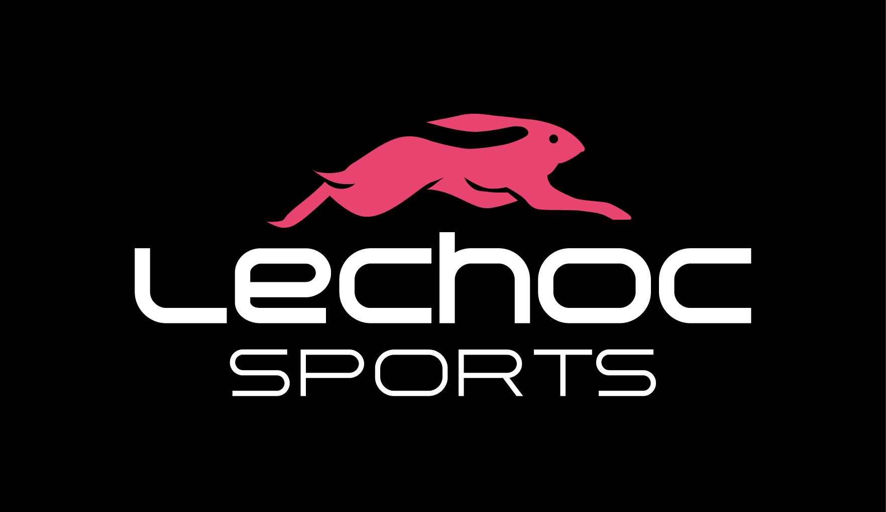
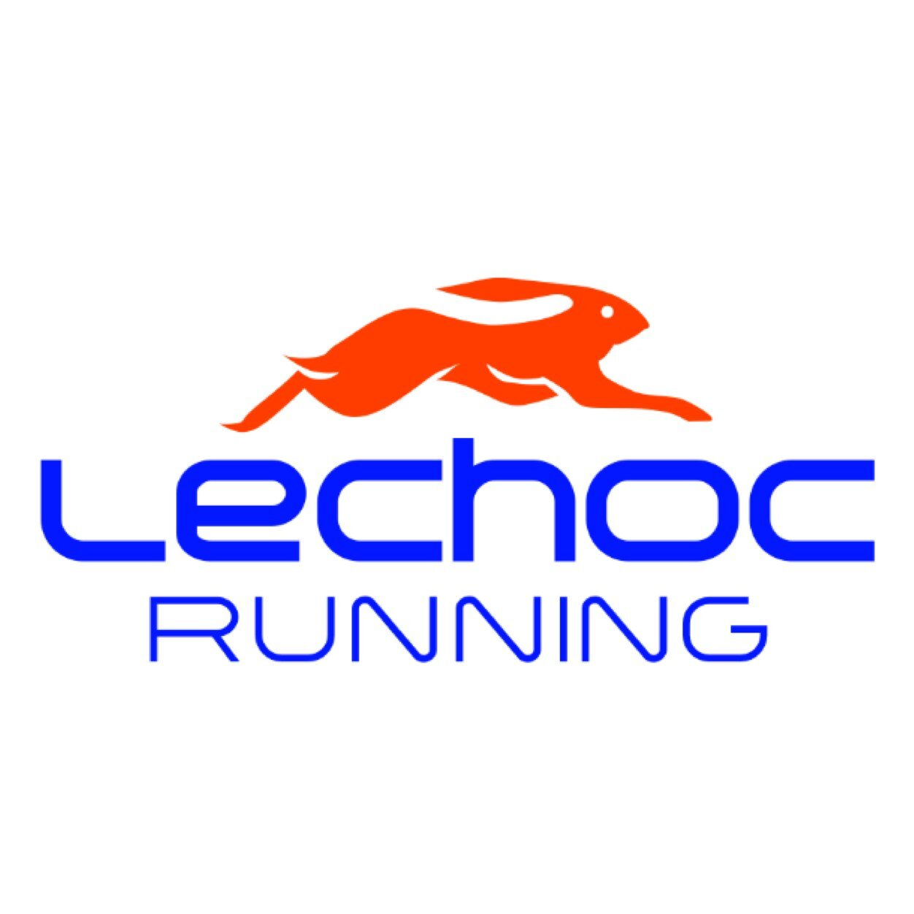

Diagnóstico del logo actual, 5 caminos de diseño y un prompt listo para ChatGPT por cada uno. Al final, el paso a paso para llegar al logo definitivo en vector.


Hay que simplificar la liebre, nunca reemplazarla. Las marcas que modernizaron su mascota (Mailchimp, Tripadvisor, Pringles) la dejaron más plana y simple y les funcionó. Cracker Barrel la sacó en 2025 y tuvo que volver atrás en una semana.
Rosa sobre Carbono: contraste 5,1:1 (cumple accesibilidad AA). Rosa sobre blanco: 3,8:1, sirve para la liebre pero no para texto chico; para eso va el Rosa profundo (5,4:1).
Cada una con la idea, por qué funciona y el prompt para ChatGPT. Antes de pegar el prompt, adjunta en ChatGPT la imagen del logo actual (la de arriba) para que respete la liebre.
La misma liebre en carrera, redibujada con pocas formas sólidas, curvas del mismo radio y un punto como ojo. "lechoc" en minúscula con una sans geométrica moderna y "digital lab" chico en letra de código.
La oreja larga y el lomo de la liebre forman una "L". Funciona como ícono de app y favicon; el nombre completo va al lado.
La liebre dibujada con una línea continua de grosor parejo, como si fuera un cable o una línea de código. Liviana, elegante, muy de estudio de diseño.
Un cuadrado redondeado rosado (como ícono de app) con la liebre recortada en negativo, saliendo por el borde derecho como si corriera fuera del cuadro.
La silueta de la liebre construida con módulos cuadrados de esquinas redondeadas, como píxeles grandes, y la cola convertida en el cursor de texto "_". Es la que más grita "digital".
Fuentes de tendencias: Creative Bloq, tendencias 2026 · Vistaprint, mascotas simplificadas · DM Letter Studio, sistemas adaptables · Caso Cracker Barrel · Sistema de logo responsivo · Favicon a 16 px